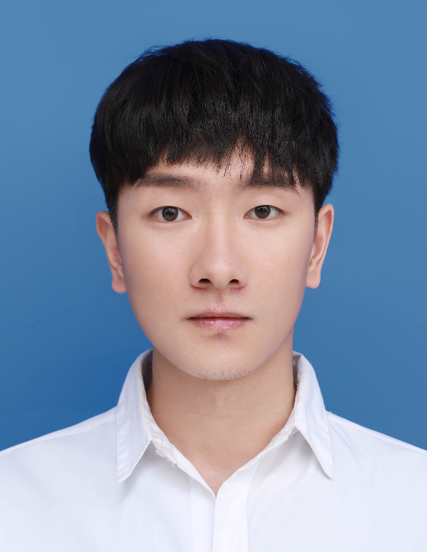

Yingpeng Ma马英鹏Bachelor
School of Software, |
 |


I received B. Eng. degree in the School of Software, Northwestern Polytechnical University (NWPU), supervised by Prof. Chunwei Tian.
My research interests include deep learning and computer vision.
News
[Jun 2022] I received B. Eng. degree from Northwestern Polytechnical University (NWPU) in just three years.
[Jun 2022] Excellent Undergraduate Graduation Project, Northwestern Polytechnical University, 2022.
[Nov 2021] Outstanding Undergraduate Student, Northwestern Polytechnical University, 2020-2021.
[Oct 2021] Second-Class Scholarship, Northwestern Polytechnical University, 2020-2021.
[Oct 2021] Apply for early graduation.
[Oct 2021] Seven titles of Advanced Individual, including Academic Advanced Individual,
Diligent and Erudite Advanced Individual, etc. (The person who got the most in the School of Software)
[Aug 2021] I joined Prof. Chunwei Tian's group.
[May 2021] First Prize, the Programming Competition of NWPU.
[Apr 2021] National Excellent Conclusion, the College Student Innovation and Entrepreneurship Training Program I was responsible for.
[Apr 2021] Successful Participant, the Mathematical Contest In Modeling (MCM).
[Nov 2020] Become the Leader of Excellent Student Team, the School of Automation.
[Aug 2020] National First Prize, the 15th National University Students Intelligent Car Race.
[Aug 2020] Provincial First Prize, the 15th National University Students Intelligent Car Race.
[Jun 2020] Third Prize, the Mathematical Modeling Competition of NWPU.
[May 2020] Third Prize, the Intelligent Car Race of NWPU.
[Apr 2020] The College Student Innovation and Entrepreneurship Training Program I was responsible for
passed the reply and won the National Project Approval.
Honors & Awards
Excellent Undergraduate Graduation Project (3/217), 2022
Outstanding Undergraduate Student, Northwestern Polytechnical University, 2020-2021.
Second-Class Scholarship, Northwestern Polytechnical University, 2020-2021
Seven titles of Advanced Individual (1/285), 2021
National First Prize, the 15th National University Students Intelligent Car Race, 2020
Provincial First Prize, the 15th National University Students Intelligent Car Race, 2020
First Prize, the Programming Competition of NWPU, 2021
Leader of Excellent Student Team of School of Automation, 2020
Successful Participant, the Mathematical Contest In Modeling (MCM), 2021
Third Prize, the Mathematical Modeling Competition of NWPU, 2020
Third Prize, the Intelligent Car Race of NWPU, 2020
Professional Activities
-
Journal Reviews
International Journal of Image and Graphics (IJIG) Asian Conference on Artificial Intelligence Technology (ACAIT)